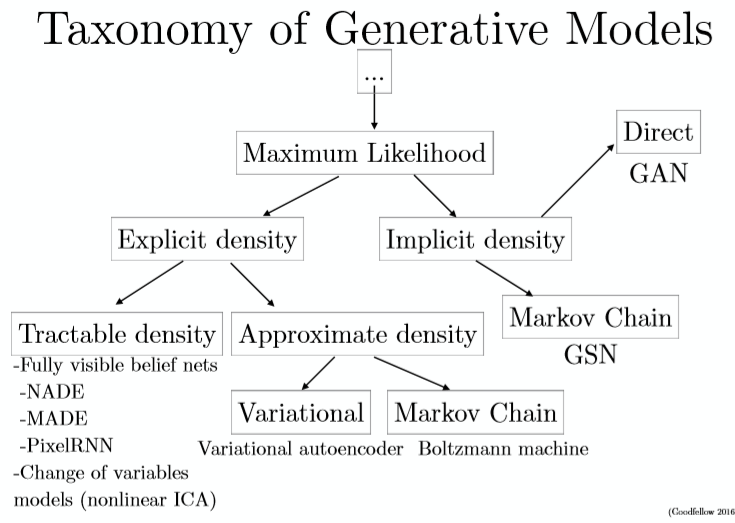

why study generative models?
1.excellent test our ability to use high-dimensional complicated proability distributions
2.simulate possible futures for planning or simulate RL
3.missing data (provide data)
4.multi-modal outputs
5.realistic generation tasks
how do generative models work? how do GANS compare to others?
GANS consist of two models : a generator and a discriminator.
The generator tries to capture the distribution of true examplesfor new data examples generation.
The discriminator is usually a binary classifier ,discriminatinggenerated examples from true examples as accurately as possible.

generative algorithms
generative algorithms can be classified into two classes: explicit density model and implicit density model.
explicit density model assumes the distribution and utillizes true data to train the model containing the distribution or fit the distribution parameters.when finished ,new examples are produced utilizing
the learning model or distribution .
The explicit model density models include maximum likelihood estimation,approximate inference ,and Markov chain method .
maximum likelihood estimation :$\hat{\theta}= \mathop{\arg\max}\limits_{\quad\quad\theta} [Pr(x_{1\dots i}\mid\theta)] = \mathop{\arg\max}\limits_{\quad\quad\theta}\prod_{i=1}^i[Pr(x_{ i}\mid\theta)]$